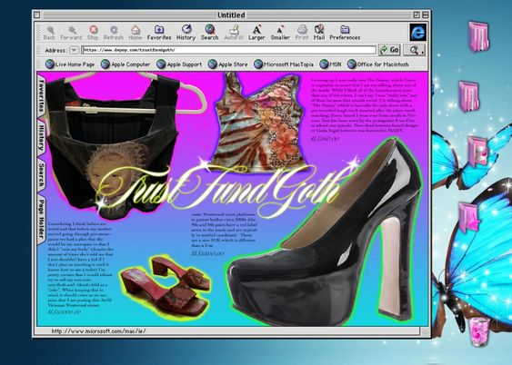

Fashion styling can be defined as an act of expression. For centuries, fashion has acted as a tangible extension of one's inner self, serving as an instrument for self-expression and “...framework for understanding how we express ourselves through dress in everyday life.”.1 With the emergence of social media and the digital aesthetic in recent years, there has been a fundamental change in the expression of fashion styling, creating new opportunities for originality, self-discovery, and self-promotion2 It has evolved into a platform where individuals can communicate their " relation to society, and how people present themselves to others."3 As a result, Twitter, Instagram, TikTok, and various other social media platforms have begun to affect this everyday practice. In order to understand the prevalent impact that social media and digital technology have had on contemporary fashion styling, one must examine how these platforms have shaped the way we choose to present ourselves to the worldthrough these digital threads. Digital Threads is a visual essay website that tackles questions about the social and cultural impact that social media has had on contemporary fashion styling.
1. Marie Riegels Melchior, "Fashion Blogging and Aspirational Identity: Negotiating Aspirational Self-Fashioning through Fashion Blogs," in The Fashion Studies Handbook, ed. Annette Lynch and Elizabeth Wissinger (London: Bloomsbury Academic, 2019), 14.
2.Arianne Schnettler, "The In-Between State of Transgender: Gender, Fashion, and Social Media in the Digital Age," Fashion, Style & Popular Culture 6, no. 3 (2019): 369-385, 372.
3. Jo Jenkinson, "Wear Your Identity': Styling Identities of Youth Through Dress – A Conceptual Model," Fashion, Style & Popular Culture 7, no. 1 (2020): 73-99, DOI: .
2.Arianne Schnettler, "The In-Between State of Transgender: Gender, Fashion, and Social Media in the Digital Age," Fashion, Style & Popular Culture 6, no. 3 (2019): 369-385, 372.
3. Jo Jenkinson, "Wear Your Identity': Styling Identities of Youth Through Dress – A Conceptual Model," Fashion, Style & Popular Culture 7, no. 1 (2020): 73-99, DOI: .
